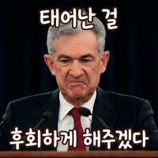

@28. 시발 아무도 2천에 안샀으니까 2천이고 다 같이 샀으니까 9천 찍은 거지. 그래서 다 가난해진 거고, 이게 이해가 안감?
↳ 답글 · ㅇㅇ · 11.26 15:25:54
진짜 찢갈이들은 뇌에 어디 문제 있는거 아님?
동전주 개잡주도 하루에 수백프로씩 오르고 내리는데 이것도 대단한거냐?
슨피가 대단한 건 장기적으로 꾸준히 우상향하니까 그런 거고 코스피는 버블 심하게 터져서 장기적으로 개좆망한 시장이 돼버렸는데 이걸 좋다고 처빠는 찢갈이들은 진짜 어딘가 좀 문제 있긴 한듯
이 사람 진짜 괜찮더라.
금리 올리기 = 통화량 감소,긴축이라 욕먹는거거든.
이창용 이 쓰레기년은 눈치 살살 보면서 금리 끝까지 안올렸는데
이 사람은 바로 올림. 그리고 그 방향성이 맞았던게, 미국도 또 금리 올림.
ㅇㅇ · 11.26 15:07:51
윤석열때보다 코스피 2배가 올랐는데 ㅋㅋㅋ 그럼 윤석열때는 거지로 살았나
↳ 답글 · ㅇㅇ · 11.26 15:55:00
진짜 찢갈이 지능 수준... 21년 유동성 버블장 꼭대기에서 물리고 윤석열 계엄령 처맞아도 최대 -28%이었는데 지금은 겨우 반년만에 -50% 박힌 거다
박스피 시절엔 하는 놈도 별로 없었고 최대한 꼬라박아도 반토막이 안 나는데 지금은 정반대란 거다
아직도 이해가 안되노?
↳ 답글 · ㅇㅇ · 11.26 17:52:58
@ㅇㅇ 삼전 6만원에 거의 1년있었는데 왜 6만원에 안타고 30만원에 사고 남탓을하노.. 내생각에 조선인한테 투자 자체가 사치인거같암 아예 금지시켜야함
ㅇㅇ · 11.26 15:15:40
대츨 잠그고 금리 올리고 보유세 올려라
ㅇㅇ · 11.26 15:16:05
금리 내년 6월까지 3번 더 올려야 한다
ㅇㅇ · 11.26 15:18:37
부동산 상승에 의한 부의 효과는 존재하지 않음 아파트 3배 올랐다고 소비 3배 늘었냐?
특히 노무현때 처음 부동산 상승을 맛보고 과소비 하다 바로 2008년 서브프라임 쳐맞고 2012년 하우스푸어 사태로 이어진 기억이 있어서
이젠 부동산 올랐다고 어디서 갑자기 현금이 나오는것도 아니고 주담대 내서 소비할것도 아니고 소비가 늘어나진 않음
하지만 주식은 왠지 꽁돈 생긴거 같고 돈 번거 알려지면 지인들 소고기도 사줘야 될거 같고 바로 소비 증가로 이어짐
↳ 답글 · ㅇㅇ · 11.26 15:29:51
맞음. 올해 초중반 주식좋을때 백화점매출 최고점. 부동산은 올라도 현금흐름과 거리가 있어 소비와 크게 연결이 되지 않음.
히이잉 · 11.26 15:19:11
ㅇㅇ · 11.26 15:26:10
금리나 쳐 올려 시발 이자라도 쳐먹게
ㅇㅇ · 11.26 15:45:50
주식은 무적권 기관 외인이 이기는 싸움인가? 올해 그 난리속 수익 실현한 개미는 극히 적나보네...진짜 돈으로 돈버는 인간들 무섭노
ㅇㅇ · 11.26 15:46:29
나라 돈이 전부 똥파트에 묶여서 돌지가 않으니 똥파트때문에 망국됨
ㅇㅇ · 11.26 15:47:24
당연한 소리 아님?
앙파상 · 11.26 15:48:23
금리 올리라고 ㅈㄹㅈㄹ하더니 막상올리니까 덮어놓고 대출받은애들 다튀어나오네
ㅇㅇ · 11.26 16:01:40
ㅇㅇ · 11.26 16:02:20
9천에 들어가는놈이 병신이지 ㅋㅋ
피콩. · 11.26 16:04:54
아이리칸나 빠는 현진견은 사람의 모습을한 바퀴벌레다
ㅇㅇ · 11.26 16:12:30
기준금리 4%까지는 좀 올리자
ㅇㅇ · 11.26 16:15:07
그럼 뭐 매일 주식 올라가는줄 알았노?? ㅋㅋㅋㅋ그럼 뭐 매일 주식 올라가는줄 알았노?? ㅋㅋㅋㅋ그럼 뭐 매일 주식 올라가는줄 알았노?? ㅋㅋㅋㅋ그럼 뭐 매일 주식 올라가는줄 알았노?? ㅋㅋㅋㅋ그럼 뭐 매일 주식 올라가는줄 알았노?? ㅋㅋㅋㅋ그럼 뭐 매일 주식 올라가는줄 알았노?? ㅋㅋㅋㅋ
ㅇㅇ · 11.26 16:28:47
댓글에 빚투나 대출 받은 븅신들 ㅈㄴ 많네 금리 더 올려야할듯 ㅋㅋ
ㅇㅇ · 11.26 16:33:45
당연한 소리를 큰따옴표 인용하면 뭐 대단하게 들리나
ㅇㅇ · 11.26 16:35:11
일반 국민들이 고점에 우르르 들어가서 설거지당하는 것은 과학임
털맨 · 11.26 16:55:08
ㅇㅇ · 11.26 16:56:48
잼파파가 두렵지않나보네 흠
ㅇㅇ · 11.26 17:06:08
하반기에만 개미들 580조 손실이라고 뉴스 떴던데 내수 침체 올만함 ㅋㅋ
↳ 답글 · ㅇㅇ · 11.26 17:06:48
금융교육조차 받지 않은 전국민이 주식 광풍에 포모 느껴서 깡통 참 ㅋㅋ
설거지 goat네
ㅇㅇ · 11.26 17:07:18
쥬럼통 당하고시퍼?
ㅇㅇ · 11.26 17:09:45
극우내란 몰이당하시는거 아니냐 ㅠㅠ
풀러리 · 11.26 17:20:14
dd · 11.26 17:28:21
인상이 약간 웃음 참는상이네
ㅇㅇ · 11.26 18:32:02
소비가 침체되면 금리를 인하해야 되는거 아냐?
ㅇㅇ · 11.26 18:59:07
(금리를 또 올리며)
ㅇㅇ · 11.26 19:44:38
짜이밍 지지율 좆박으니까 들이박네 ㅋㅋㅋㅋ
ㅇㅇ · 11.26 20:06:11
7%까지 올려라 빨리 진짜 좋은말 할때
ㅇㅇ · 11.26 20:17:13
네 이 ！버 카！페 ！ 삽！니다. 카！가！오！똑 c a f e！ b u y ！ 빼！고 문！ 의
반도체, 전라도쪽에만 풀렸지
다른곳은 안풀었어
그리고 금리인상이 경기침체다..이건 기본상식이야
↳ 답글 · ㅇㅇ · 11.26 14:33:43
그리고 금리 올리는데 부동산도 오르는중이다ㅋ
ㅇㅇ · 11.26 13:24:06
시장에 돈은 쳐풀면서 금리는 왜 올림? - dc App
ㅇㅇ · 11.26 13:24:23
주식시장 침체 (X)
이재명때문에 주식시장이 침체하고 그로인해 소비시장 심각 (O)
ㅇㅇ · 11.26 13:24:28
저격 개쩌네
손절매 · 11.26 13:24:30
한은총재 탄핵되겠네
ㅇㅇ · 11.26 13:25:31
걍 병신이노
ㅇㅇ · 11.26 13:25:33
신현송 믿는 애들 많던데 이번에 반도체 관련해서 발언하는거보고 이새끼도 약간 이창용과 아닌가 싶더라
좀 이상함
↳ 답글 · ㅇㅇ · 11.26 13:26:24
이창용보단 좀 덜하고 조금 낫다 싶은거지 언제 이상한 노선 탈지 모르겠음
↳ 답글 · ㅇㅇ · 11.26 13:35:59
말많아지면 걍 경계해야함
ㅇㅇ · 11.26 13:25:45
잘했어요 금리라도 올려야죠
찢 · 11.26 13:26:03
찢이새끼 리밸런싱 안해서 수익 200조 날린거 이거 솔직히 계엄 10번보다 심각한데 나라 조용한게 호러임... 200조 숫자 감이 안오나? - dc App
↳ 답글 · 찢 · 11.26 13:26:13
↳ 답글 · 찢 · 11.26 13:26:25
ㅇㅇ · 11.26 13:26:09
금리인상도 찢 작품임 어떻게든 부동산 잡아서 총선전 치적올릴려고 주식이랑 실물경기 다 포기하고 저기 올인하는거
ㅇㅇ · 11.26 13:27:17
한쪽은 금리 올리고 한쪽은 돈 더 풀려고 하고. 이 모순을 어떻게 하려고 함 .둘 중에 하나만 해야 하고 지금은 물가 잡는게 우선임
↳ 답글 · ㅇㅇ · 11.26 13:28:01
전형적인 망하는 흐름인데 아무도 이걸 지적안함 ㅋㅋㅋㅋㅋ 시발 그냥 고리대금수준 ㅋㅋㅋㅋ
ㅇㅇ · 11.26 13:27:22
이래나 저래나 어차피 삼닉거품꺼지면 모든경기가 운지할텐데 나중엔 안내리고싶어도 내리게됨
↳ 답글 · 해적선. · 11.26 13:30:21
ㄹㅇㅋㅋ
ㅇㅇ · 11.26 13:27:24
저 위에서 얼마나 개쳐물렸으면 씨발 ㅋㅋㅋㅋㅋㅋㅋㅋㅋㅋㅋㅋㅋㅋ
ㅇㅇ · 11.26 13:27:33
영끌새끼들 지들이 디지면 나라에 반영구적인 상처가 남는다 어떤다 이지랄하네 ㅋㅋㅋ 영끌이들을 아득바득 살려서 나라 정상화에 성공한다고 가정해도 영끌이 새끼들이 아이고 나라님 내 목숨줄 꽉 붙잡고 끝까지 살려주셔서 감사합니다 할 것 같음? ㅋㅋㅋ 영끌해서 목숨걸고 도박해서 개좆망했는데 이걸 나라가 아묻따 살려주네? 또 해야지 ㅋㅋ 이러는 도박충새끼들인데 왜 살려줌? ㅋㅋㅋㅋㅋㅋㅋㅋ 영끌이들은 목숨줄 붙여놓는 것 자체가 나라에 큰 암덩어리를 그대로 방치해놓는 것임 ㅋㅋㅋ
어이가 없구나... 사법시험에 영어 말하기 시험이 있다고 하고 음주전과 및 검ㅅ ㅏ사칭 잡범 전과 4범에 부동산 , 대북송금 주요 비리들 엮여있는 새기 말을 믿노 ㅋㅋㅋㅋㅋㅋㅋㅋㅋㅋㅋㅋㅋㅋㅋㅋㅋㅋㅋㅋㅋㅋㅋㅋㅋㅋㅋㅋㅋㅋㅋ 니들 업보다 ㅋㅋ 하루 1끼 1만원도 아까워 하는 것들이 탐욕 좆되서 몇천만원 몇억을 스캠 피싱 동급인 데에다가 돈 쳐박고 ㅋㅋㅋㅋㅋㅋㅋㅋㅋㅋㅋㅋㅋㅋㅋㅋㅋㅋㅋㅋㅋㅋ
왜 좋아하는건지 이해가 안 됨
한은 혼자 이렇게 올리면서 정부는 계속 적자재정이라서 인플레는 계속 되는데 정작 유동성은 또 떡락해서 내수가 진짜 개박살 날거 같은데...
긴축재정과 금리인상은 단기간에 빠르게 악성부채 해결하고 다시 유동성 풀어야 그나마 중산층들에게 상흔이 덜 남는데 지금 꼬라지 보면 반영구적 타격이 갈 거 같아서 심히 우려됨
끼얏호우 님, 한은 총재가 의사봉 두드리는 짤이랑 군림보 프로필이 같이 붙어 있어서 잠깐 "어... 아아아!! " 했어요... 금리 얘기가 나오니 예금 줄줄이 빠지던 흐름이 갑자기 정상화됐는데도 안 돌아온다는 댓글이 제일 와닿네요... 저는 지수 추종하는 사람들 얘기까지는 잘 모르겠는데, 확실친 않아요... 히잉...
ㅇㅇ · 11.26 13:17:14
주식하는 놈들이 잘못된거임. 원래 학교에선 예적금 잘하라고 가르치지 주식하라고 안가르침. 주식에 속은 애들은 다 피라미드 이런거 걸린거임
댓글
수집 당시 댓글 276개
히이잉 · 11.26 13:51:22
ㅇㅇ · 11.26 13:54:56
ㅇㅇ · 11.26 13:56:10
· ㅇㅇ · 11.26 13:56:51
· ㅇㅇ · 11.26 14:00:12
· ㅇㅇ · 11.26 14:06:43
· ㅇㅇ · 11.26 14:07:34
· ㅇㅇ · 11.26 14:23:00
· ㅇㅇ · 11.26 14:47:37
· ㅇㅇ · 11.26 14:49:23
파치카 · 11.26 13:59:32
ㅇㅇ · 11.26 13:59:48
ㅇㅇ · 11.26 14:03:17
· ㅇㅇ · 11.26 14:19:04
· 부엉이왕국 · 11.26 15:00:44
28. · 11.26 14:03:58
· ㅇㅇ · 11.26 14:05:27
· 28. · 11.26 14:06:38
· ㅇㅇ · 11.26 14:29:25
· 28. · 11.26 14:42:05
· ㅇㅇ · 11.26 14:48:19
· ㅇㅇ · 11.26 14:53:37
· ㅇㅇ · 11.26 15:25:54
· 28. · 11.26 16:20:53
· 28. · 11.26 16:21:16
· 28. · 11.26 16:21:26
· ㅇㅇ · 11.26 16:35:00
· 28. · 11.26 16:38:33
· ㅇㅇ · 11.26 16:39:37
· 28. · 11.26 16:43:02
· 111 · 11.26 17:45:37
· ㅇㅇ · 11.26 18:06:50
· ㅇㅇ · 11.26 18:07:14
· 동작구 · 11.26 20:30:58
· 28. · 11.26 20:46:02
· 28. · 11.26 20:46:26
· 28. · 11.26 20:46:56
ㅇㅇ · 11.26 14:05:37
ㅇㅇ · 11.26 14:07:26
· ㅇㅇ · 11.26 14:09:57
· ㅇㅇ · 11.26 14:10:34
ㅇㅇ · 11.26 14:08:56
ㅇㅇ · 11.26 14:11:40
· (⌒,_>⌒) · 11.26 14:12:31
ㅇㅇ · 11.26 14:12:35
ㅇㅇ · 11.26 14:14:02
ㅇㅇ · 11.26 14:15:32
ㅇㅇ · 11.26 14:16:33
ㅇㅇ · 11.26 14:22:15
ㅇㅇ · 11.26 14:30:03
ㅇㅇ · 11.26 14:33:40
· ㅇㅇ · 11.26 14:34:52
ㅇㅇ · 11.26 14:35:52
ㅇㅇ · 11.26 14:43:29
ㅇㅇ · 11.26 14:44:36
히이잉 · 11.26 14:47:15
ㅇㅇ · 11.26 14:47:51
ㅇㅇ · 11.26 14:48:03
ㅇㅇ · 11.26 14:51:35
ㅇㅇ · 11.26 14:53:40
ㅇㅇ · 11.26 14:54:45
ㅇㅇ · 11.26 14:55:22
· ㅇㅇ · 11.26 14:55:28
ㅁㅇㄻㄹ · 11.26 14:55:52
ㅇㅇ · 11.26 15:07:31
ㅇㅇ · 11.26 15:07:51
· ㅇㅇ · 11.26 15:55:00
· ㅇㅇ · 11.26 17:52:58
ㅇㅇ · 11.26 15:15:40
ㅇㅇ · 11.26 15:16:05
ㅇㅇ · 11.26 15:18:37
· ㅇㅇ · 11.26 15:29:51
히이잉 · 11.26 15:19:11
ㅇㅇ · 11.26 15:26:10
ㅇㅇ · 11.26 15:45:50
ㅇㅇ · 11.26 15:46:29
ㅇㅇ · 11.26 15:47:24
앙파상 · 11.26 15:48:23
ㅇㅇ · 11.26 16:01:40
ㅇㅇ · 11.26 16:02:20
피콩. · 11.26 16:04:54
ㅇㅇ · 11.26 16:12:30
ㅇㅇ · 11.26 16:15:07
ㅇㅇ · 11.26 16:28:47
ㅇㅇ · 11.26 16:33:45
ㅇㅇ · 11.26 16:35:11
털맨 · 11.26 16:55:08
ㅇㅇ · 11.26 16:56:48
ㅇㅇ · 11.26 17:06:08
· ㅇㅇ · 11.26 17:06:48
ㅇㅇ · 11.26 17:07:18
ㅇㅇ · 11.26 17:09:45
풀러리 · 11.26 17:20:14
dd · 11.26 17:28:21
ㅇㅇ · 11.26 18:32:02
ㅇㅇ · 11.26 18:59:07
ㅇㅇ · 11.26 19:44:38
ㅇㅇ · 11.26 20:06:11
ㅇㅇ · 11.26 20:17:13
ㅇㅇ · 11.26 20:47:06
ㅇㅇ · 11.26 13:17:19
· ㄴㄷㄴㄷ · 11.26 13:56:37
· ㅇㅇ · 11.26 14:00:35
· ㄴㄷㄴㄷ · 11.26 14:23:54
ㅇㅇ · 11.26 13:17:47
· 옌유리 · 11.26 14:11:31
ㅇㅇ · 11.26 13:17:51
ㅇㅇ · 11.26 13:17:52
감성삼림 · 11.26 13:17:59
· ㅇㅇ · 11.26 13:34:45
· ㅇㅇ · 11.26 13:40:25
ㅇㅇ · 11.26 13:19:35
대 재 명
ㅇㅇ · 11.26 13:19:45
ㅇㅇ · 11.26 13:19:51
· ㅇㅇ · 11.26 14:15:56
ㅇㅇ · 11.26 13:20:36
모든인간에게돈을주자
Hololive만본다 · 11.26 13:20:43
ㅇㅇ · 11.26 13:20:57
· ㅇㅇ · 11.26 13:23:35
· ㅇㅇ · 11.26 13:24:18
· ㅇㅇ · 11.26 13:36:00
· ㅇㅇ · 11.26 14:00:27
ㅇㅇ · 11.26 13:21:00
이재명
보유세
· ㅇㅇ · 11.26 13:22:38
맵다
매워
나라니까? · 11.26 13:23:22
· ㅇㅇ · 11.26 13:24:26
ㅇㅇ · 11.26 13:23:45
· ㅇㅇ · 11.26 14:31:35
· ㅇㅇ · 11.26 14:33:43
ㅇㅇ · 11.26 13:24:06
ㅇㅇ · 11.26 13:24:23
ㅇㅇ · 11.26 13:24:28
손절매 · 11.26 13:24:30
ㅇㅇ · 11.26 13:25:31
ㅇㅇ · 11.26 13:25:33
· ㅇㅇ · 11.26 13:26:24
· ㅇㅇ · 11.26 13:35:59
ㅇㅇ · 11.26 13:25:45
찢 · 11.26 13:26:03
· 찢 · 11.26 13:26:13
· 찢 · 11.26 13:26:25
ㅇㅇ · 11.26 13:26:09
ㅇㅇ · 11.26 13:27:17
· ㅇㅇ · 11.26 13:28:01
ㅇㅇ · 11.26 13:27:22
· 해적선. · 11.26 13:30:21
ㅇㅇ · 11.26 13:27:24
ㅇㅇ · 11.26 13:27:33
ㅇㅇ · 11.26 13:27:55
· ㅇㅇ · 11.26 13:29:50
· ㅇㅇ · 11.26 14:30:14
· ㅇㅇ · 11.26 14:43:15
ㅇㅇ · 11.26 13:28:57
헌트 · 11.26 13:28:57
ㅇㅇ · 11.26 13:29:28
해적선. · 11.26 13:29:56
· ㅇㅇ · 11.26 14:29:04
ㅇㅇ · 11.26 13:30:57
히이잉 · 11.26 13:31:14
ㅇㅇ · 11.26 13:31:18
ㅇㅇ · 11.26 13:32:05
kzine · 11.26 13:35:16
ㅇㅇ · 11.26 13:35:42
ㅇㅇ · 11.26 13:35:44
· ㅇㅇ · 11.26 13:36:39
· ㅇㅇ · 11.26 13:37:49
ㅇㅇ · 11.26 13:37:27
ㅇㅇ · 11.26 13:38:41
· ㅇㅇ · 11.26 13:39:27
· ㅇㅇ · 11.26 13:39:54
· ㅇㅇ · 11.26 13:56:08
· ㅇㅇ · 11.26 14:27:43
· ㅇㅇ · 11.26 15:00:01
ㅇㅇ · 11.26 13:40:53
ㅇㅇ · 11.26 13:40:55
타이밍뒷통수한방 · 11.26 13:41:08
글갤러 · 11.26 13:42:12
ㅇㅇ · 11.26 13:43:07
ㅇㅇ · 11.26 13:43:42
알면서 올렸다고?이 백정놈
ㅇㅇ · 11.26 13:43:48
kawa · 11.26 13:44:07
ㅇㅇ · 11.26 13:44:13
· ㅇㅇ · 11.26 13:44:55
ㅇㅇ · 11.26 13:45:45
Wasd · 11.26 13:46:12
· 샨테 · 11.26 16:59:23
바이럴탐지기 · 11.26 13:47:55
· 섬마을대머리 · 11.26 13:50:34
· ㅇㅇ · 11.26 13:51:52
· ㅇㅇ · 11.26 14:20:27
· ㅇㅇ · 11.26 15:43:42
ㅇㅇ · 11.26 13:49:00
ㅇㅇ · 11.26 13:49:12
· ㅇㅇ · 11.26 13:49:21
ㅇㅇ · 11.26 13:49:46
섬마을대머리 · 11.26 13:49:50
· ㅇㅇ · 11.26 13:55:24
· ㅇㅇ · 11.26 14:26:28
· ㅇㅇ · 11.26 14:50:02
· ㅇㅇ · 11.26 18:30:42
오트초코쿠키 · 11.26 12:19:52
지지말아요 · 11.26 12:19:54
황금부엉이 · 11.26 12:20:17
· ㅇㅇ · 11.26 12:21:15
· ㅇㅇ · 11.26 12:22:04
· 황금부엉이 · 11.26 12:23:13
· ㅇㅇ2 · 11.26 12:24:36
· 구구가가투자증권 · 11.26 12:29:29

· ㅇㅇ7 · 11.26 12:38:58
· 땅볼로터널공사 · 11.26 12:53:09
· ㅇㅇ · 11.26 13:22:11
· ㅇㅇ · 11.26 13:23:40
· ㅇㅇ · 11.26 13:25:09
포자만두 · 11.26 12:20:21
· ㅇㅇ · 11.26 13:38:57
ㅇㅇ · 11.26 12:20:30
ㅇㅇ · 11.26 12:20:47
ㅇㅇ1 · 11.26 12:20:48
ㅇㅇ · 11.26 12:21:40
친일친미친중혐한 · 11.26 12:21:56
헷제증권 · 11.26 12:23:11
ㅇㅇ · 11.26 12:23:19
· ㅇㅇ · 11.26 12:27:21
줄건줘
ㅇㅇ · 11.26 12:28:27
· ㅇㅇ3 · 11.26 12:31:22
· ㅇㅇ · 11.26 12:32:33
ㅇㅇ3 · 11.26 12:31:10
· ㅇㅇ · 11.26 12:39:46
· ㅇㅇ · 11.26 12:45:32
· ㅇㅇ · 11.26 12:46:23
· ㅇㅇ · 11.26 12:46:59
· ㅇㅇ15 · 11.26 13:06:26
· ㅇㅇ · 11.26 13:22:16
· 필어먹을 · 11.26 13:27:27
· ㅇㅇ · 11.26 13:31:18
· ㅇㅇ · 11.26 13:34:43
· ㅇㅇ · 11.26 14:09:22
· ㅇㅇ · 11.26 14:10:57
ㅇㅇ · 11.26 12:31:13
ㅇㅇ · 11.26 12:31:17
· ㅇㅇ10 · 11.26 12:46:00
· ㅇㅇ · 11.26 12:52:15
· ㅇㅇ · 11.26 12:57:29
· ㅇㅇㅇㅇㅇ · 11.26 13:06:30
· ㅇㅇ · 11.26 13:08:25
ㅇㅇ · 11.26 12:32:29
ㅇㅇ · 11.26 12:32:42
ㅇㅇ4 · 11.26 12:34:58
ㅇㅇ5 · 11.26 12:35:43
· ㅇㅇ5 · 11.26 12:36:28
· ㅇㅇ · 11.26 13:42:58
ㅇㅇ6 · 11.26 12:36:10
ㅇㅇ8 · 11.26 12:39:55
· ㅇㅇ · 11.26 12:42:42
· ㅇㅇ11 · 11.26 12:46:39
· ㅇㅇ · 11.26 12:52:35
· ㅇㅇ · 11.26 13:48:41
ㅇㅇ9 · 11.26 12:40:54
ㅇㅇ · 11.26 12:41:06
볼부이 · 11.26 12:46:09
ㅇㅇ · 11.26 12:52:10
· ㅇㅇ12 · 11.26 12:55:37
· ㅇㅇ · 11.26 12:57:05
· ㅇㅇ · 11.26 13:52:00
· ㅇㅇ · 11.26 13:53:19
ㅇㅇ · 11.26 12:55:24
ㅇㅇ · 11.26 13:00:28
ㅇㅇ13 · 11.26 13:01:52
미쿠닷컴 · 11.26 13:03:36
ㅇㅇ16 · 11.26 13:06:38
ㅇㅇ · 11.26 13:16:53
대재명
ㅇㅇ · 11.26 13:17:01
ㅇㅇ · 11.26 13:17:06
봇치쟝 · 11.26 13:17:07
ㅇㅇ · 11.26 13:17:14
ㅇㅇ · 11.26 13:17:15